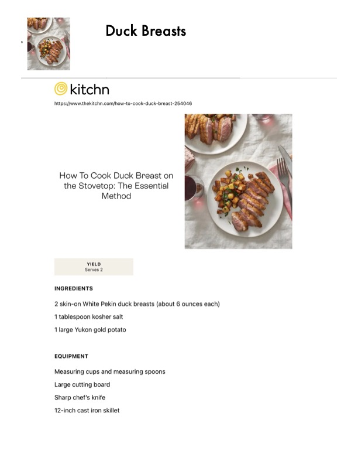

Duck Breasts

Original cookbook page 298
Ingredients
- 2 skin-on White Pekin duck breasts (about 6 ounces each)
- 1 tablespoon kosher salt
- 1 large Yukon gold potato
- EQUIPMENT
- Measuring cups and measuring spoons
- Large cutting board
- Sharp chef's knife
- 12-inch cast iron skillet
Instructions
- How To Cook Duck Breast on the Stovetop: The Essential Method
- Measuring cups and measuring spoons Large cutting board Sharp chef's knife
Recipe #298 from collection